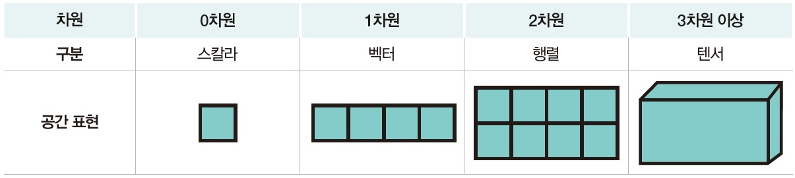
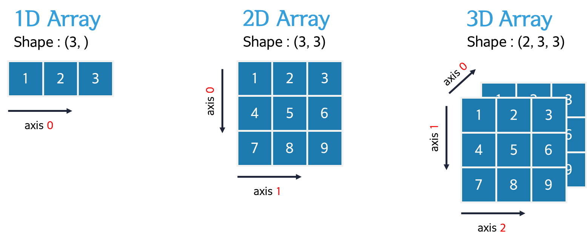
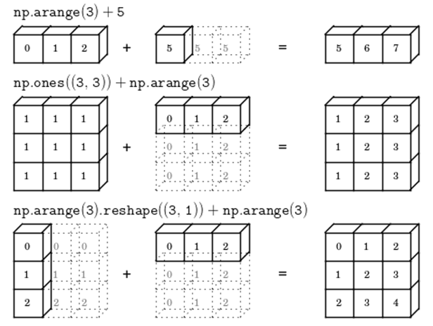

import numpy as np
- NumPy
5.1. 넘파이 배열
5.1.1. 넘파이 배열 생성
- NumPy
- Numerical Python의 약자로, C언어로 구현된 Python 라이브러리
- 고성능 수치 계산, 대규모 다차원 배열 및 행렬 연산에 최적화
- 넘파이 배열(ndarray)
- 리스트처럼 데이터를 모아 저장하는 자료구조
- 모든 원소가 동일한 자료형으로 저장(효율적인 메모리 관리 및 빠른 연산)
- 대규모 데이터 처리에 유리함
- 반복문 없이 배열 간 연산이 가능한 브로드캐스팅 및 벡터화 연산 지원
- 다양한 수학 함수, 선형대수, 난수 생성 기능 제공
| 함수 | 설명 |
|---|---|
| np.array() | 리스트, 튜플 등으로부터 배열 생성 |
| np.zeros() | 모든 값이 0인 배열 생성 |
| np.ones() | 모든 값이 1인 배열 생성 |
| np.full() | 지정한 값으로 이루어진 배열 생성 |
| np.arange() | 범위를 지정하여 연속적인 값의 배열 생성(range()와 비슷) |
| np.linspace() | 시작과 끝을 기준으로, 지정한 개수만큼 일정 간격의 값으로 배열 생성 |
| np.eye() | 행과 열의 크기를 지정할 수 있는 단위행렬(2차원 배열) 생성 |
| np.identity() | 정방 단위행렬(2차원 배열) 생성 |
# 넘파이 배열 생성1
arr1 = np.array([1, 2, 3])
arr2 = np.array((6, 7, 8, 9))
print(arr1)
print(arr2)[1 2 3]
[6 7 8 9]# 넘파이 배열 생성2
arr1 = np.zeros(5)
arr2 = np.ones(3)
arr3 = np.full(2, 5)
print(arr1)
print(arr2)
print(arr3)[0. 0. 0. 0. 0.]
[1. 1. 1.]
[5 5]# 넘파이 배열 생성3
arr1 = np.arange(10)
arr2 = np.arange(3, 6)
arr3 = np.arange(1, 11, 2)
arr4 = np.arange(0, 1, 0.1)
print(arr1)
print(arr2)
print(arr3)
print(arr4)[0 1 2 3 4 5 6 7 8 9]
[3 4 5]
[1 3 5 7 9]
[0. 0.1 0.2 0.3 0.4 0.5 0.6 0.7 0.8 0.9]# 넘파이 배열 생성4
arr = np.linspace(0, 1, 5)
print(arr)[0. 0.25 0.5 0.75 1. ]# 넘파이 배열 생성5
arr1 = np.eye(3)
arr2 = np.eye(3, 4, k=1)
print(arr1)
print(arr2)[[1. 0. 0.]
[0. 1. 0.]
[0. 0. 1.]]
[[0. 1. 0. 0.]
[0. 0. 1. 0.]
[0. 0. 0. 1.]]# 넘파이 배열 생성6 : np.identity()는 np.eye()의 특수한 경우
arr = np.identity(4)
print(arr)[[1. 0. 0. 0.]
[0. 1. 0. 0.]
[0. 0. 1. 0.]
[0. 0. 0. 1.]]5.1.2. 넘파이 배열 속성
| 속성 | 설명 |
|---|---|
| .dtype | 배열 원소의 자료형 |
| .ndim | 배열의 차원 수 |
| .shape | 배열의 모양(행, 열) |
| .size | 배열의 전체 원소 개수 |
| .itemsize | 원소 하나의 메모리 크기 |
# 넘파이 배열 속성
arr = np.array([[1, 2, 3], [4, 5, 6]]) # 2차원 배열
print(arr)
print(arr.dtype)
print(arr.ndim)
print(arr.shape)
print(arr.size)
print(arr.itemsize)[[1 2 3]
[4 5 6]]
int32
2
(2, 3)
6
45.2. 차원과 축
5.2.1. 차원(dimension)
- 넘파이 배열의 차원
- 관측하고자 하는 데이터의 속성의 수 또는 측정 항목의 수
- 스칼라(scalar) : 0차원 배열, 배열에서 값을 표현하는 가장 기본 단위로 하나의 실수를 저장할 수 있음
- 벡터(vector) : 1차원 배열, 스칼라 여러 개를 나열한 배열
- 행렬(matrix) : 2차원 배열, 1차원 배열을 여러 개 묶은 배열
- 텐서(tensor) : 3차원 이상의 배열, 벡터의 집합

arr0 = np.array(3.14) # 0차원 배열(스칼라)
arr1 = np.array([3.14]) # 1차원 배열(벡터)
arr2 = np.array([[3.14]]) # 2차원 배열(행렬)
arr3 = np.array([[[3.14]]]) # 3차원 배열(텐서)
print(arr0.ndim, arr0.shape)
print(arr1.ndim, arr1.shape)
print(arr2.ndim, arr2.shape)
print(arr3.ndim, arr3.shape)0 ()
1 (1,)
2 (1, 1)
3 (1, 1, 1)# 1차원 배열(벡터)
arr = np.array([1, 2, 3])
print(arr.ndim)
print(arr.shape)1
(3,)# 2차원 배열(행렬)
arr = np.array([[1, 2, 3], [4, 5, 6]])
print(arr.ndim)
print(arr.shape)2
(2, 3)# 3차원 배열(텐서)
arr = np.array([[[1, 2, 3], [4, 5, 6]], [[11, 12, 13], [14, 15, 16]]])
print(arr.ndim)
print(arr.shape)3
(2, 2, 3)5.2.2. 축(axis)
- 배열에서 데이터를 따라가는 방향
- 차원이 있는 데이터에서 어느 방향으로 연산을 적용하는지 축으로 지정
- axis 0은 첫 번째 차원으로, 배열의 가장 바깥쪽 차원임
- 차원이 늘어날수록 새로운 축이 axis=0가 되며, 기존 축들은 번호가 하나씩 뒤로 밀림
- 축 번호는 배열의 차원에 따라 증가하며, 각 축은 shape에서 해당하는 차원의 크기를 나타냄
- (예) shape (2, 3, 4) → axis 0: 2(면), axis 1: 3(행), axis 2: 4(열)

| 차원 | 직관적인 구조 | 축의 역할 |
|---|---|---|
| 1차원 | 벡터 → [1, 2, 3, 4] | axis 0: 왼쪽 → 오른쪽 |
| 2차원 | 벡터들이 위아래로 쌓임 → 행렬 | axis 0: 위 → 아래(행) axis 1: 왼쪽 → 오른쪽(열) |
| 3차원 | 행렬들이 앞뒤로 쌓임 | axis 0: 앞 → 뒤(면) axis 1: 위 → 아래(행) axis 2: 왼쪽 → 오른쪽(열) |
5.2.3. 넘파이 배열 메소드
| 함수 | 설명 |
|---|---|
| sum() | 합계 |
| mean() | 평균 |
| std() | 표준편차 |
| min(), max() | 최소값, 최대값 |
| cumsum(), cumprod() | 누적 합계, 누적 곱 |
| transpose() | 축 순서 변경 |
arr = np.array([
[1, 2, 3],
[4, 5, 6]
])
# 합계
print(np.sum(arr))
print(np.sum(arr, axis=0))
print(np.sum(arr, axis=1))21
[5 7 9]
[ 6 15]# 누적합
print(np.cumsum(arr))
print(np.cumsum(arr, axis=0))
print(np.cumsum(arr, axis=1))[ 1 3 6 10 15 21]
[[1 2 3]
[5 7 9]]
[[ 1 3 6]
[ 4 9 15]]5.2.4. 배열 형태 변환
| 함수 | 설명 |
|---|---|
| reshape() | 배열을 데이터 변경없이 새로운 모양으로 변환 |
| flatten() | 다차원 배열을 1차원 배열로 복사하여 반환(원본 유지) |
| ravel() | 다차원 배열을 1차원 배열로 반환(가능하면 원본 공유, 더 효율적) |
# 1차원 배열 → 2차원 배열(3행 2열)
arr = np.array([1, 2, 3, 4, 5, 6])
print(arr.reshape(3, 2))
print(arr) # arr 원본 값이 변하지 않음[[1 2]
[3 4]
[5 6]]
[1 2 3 4 5 6]# 1차원 배열 → 3차원 배열
arr = np.arange(24)
print(arr.reshape(2, 3, 4))
print(arr) # arr 원본 값이 변하지 않음[[[ 0 1 2 3]
[ 4 5 6 7]
[ 8 9 10 11]]
[[12 13 14 15]
[16 17 18 19]
[20 21 22 23]]]
[ 0 1 2 3 4 5 6 7 8 9 10 11 12 13 14 15 16 17 18 19 20 21 22 23]# 2차원 배열 → 1차원 배열 (복사본 반환)
arr = np.array([
[1, 2, 3],
[4, 5, 6]
])
print(arr.flatten())
print(arr) # arr 원본 값이 변하지 않음[1 2 3 4 5 6]
[[1 2 3]
[4 5 6]]# 2차원 배열 → 1차원 배열 (가능하면 뷰 반환)
arr = np.array([
[1, 2, 3],
[4, 5, 6]
])
print(arr.ravel())
print(arr) # arr 원본 값이 변하지 않음[1 2 3 4 5 6]
[[1 2 3]
[4 5 6]]5.2.5. 축 재배열
| 함수 | 설명 |
|---|---|
| transpose() | 배열의 축 순서 변환(2차원 배열의 경우 행/열 전치) |
| swaqaxes() | 지정한 두 축의 순서를 교환 |
# 2차원 배열에서 transpose()
arr = np.array([
[1, 2, 3],
[4, 5, 6]
])
print(arr.transpose())[[1 4]
[2 5]
[3 6]]# 3차원 배열에서 transpose()
arr = np.arange(24).reshape(2, 3, 4)
# 축 순서 바꾸기 : (0, 1, 2) → (1, 0, 2)
print(arr.transpose(1, 0, 2))
print(arr.transpose(1, 0, 2).shape)[[[ 0 1 2 3]
[12 13 14 15]]
[[ 4 5 6 7]
[16 17 18 19]]
[[ 8 9 10 11]
[20 21 22 23]]]
(3, 2, 4)# 3차원 배열에서 axis 0과 axis 2 교환
arr = np.array([
[[1, 2], [3, 4]],
[[5, 6], [7, 8]]
])
print(np.swapaxes(arr, 0, 2))
print(np.swapaxes(arr, 0, 2).shape)[[[1 5]
[3 7]]
[[2 6]
[4 8]]]
(2, 2, 2)5.3. 얕은 복사와 깊은 복사
- 얕은 복사(shallow copy)
- 데이터의 주소를 복사하여 원본과 메모리 공간을 공유
- 원본을 수정하면 복사본이 바뀌며, 반대로 복사본을 수정해도 원본에 영향을 미침
view(),reshape()(대부분),ravel()(대부분)
- 깊은 복사(deep copy)
- 완전히 새로운 메모리 공간에 데이터의 복사본을 생성
- 원본을 수정해도 복사본이 바뀌지 않으며, 반대로 복사본을 수정해도 원본에 영향을 주지 않음
copy(),flatten()
# 얕은 복사
arr = np.arange(6)
print(arr)
copy_arr = arr.view()
print(copy_arr)
copy_arr[0] = 10
print(arr)
print(copy_arr)[0 1 2 3 4 5]
[0 1 2 3 4 5]
[10 1 2 3 4 5]
[10 1 2 3 4 5]# 깊은 복사
arr = np.arange(6)
print(arr)
copy_arr = arr.copy()
print(copy_arr)
copy_arr[0] = 10
print(arr)
print(copy_arr)[0 1 2 3 4 5]
[0 1 2 3 4 5]
[0 1 2 3 4 5]
[10 1 2 3 4 5]5.4. 인덱싱과 슬라이싱
- 인덱싱(indexing)
[index]를 사용하여 배열의 특정 위치에 있는 원소에 접근함- 얕은 복사(shallow copy)로 작동 → 원본과 메모리 공간을 공유
- 팬시 인덱싱(fancy indexing)
- 배열이나 리스트를 인덱스로 사용하여 원하는 위치의 값들을 한 번에 추출
- 복사본을 반환(deep copy) → 원본과 메모리 공간을 공유하지 않음
- 불리언 인덱싱(boolean indexing)
- 조건식을 통해 bool형 배열을 생성하여
True인 원소만 추출 - 복사본을 반환(deep copy) → 원본과 메모리 공간을 공유하지 않음
- 조건식을 통해 bool형 배열을 생성하여
- 슬라이싱(slicing)
[(start index):(stop index)]를 사용하여 배열의 일부 원소를 추출함- 얕은 복사(shallow copy)로 작동하며 뷰(view)를 반환 → 원본과 메모리 공간을 공유
# 1차원 인덱싱과 슬라이싱
arr = np.array([10, 20, 30, 40, 50])
print(arr[0])
print(arr[-1])
print(arr[1:4])
print(arr[::2])10
50
[20 30 40]
[10 30 50]# 슬라이싱은 기본적으로 뷰(view)임
arr = np.array([10, 20, 30, 40, 50])
print(arr)
sub_arr = arr[1:4]
print(sub_arr)
sub_arr[0] = 100
print(arr)
print(sub_arr)[10 20 30 40 50]
[20 30 40]
[ 10 100 30 40 50]
[100 30 40]# copy() 함수를 이용해서 깊은 복사를 해야 원본이 변하지 않음
arr = np.array([10, 20, 30, 40, 50])
print(arr)
sub_arr = arr[1:4].copy()
print(sub_arr)
sub_arr[0] = 100
print(arr)
print(sub_arr)[10 20 30 40 50]
[20 30 40]
[10 20 30 40 50]
[100 30 40]# 2차원 인덱싱과 슬라이싱
arr = np.array([[1, 2, 3],
[4, 5, 6],
[7, 8, 9]])
print(arr[1, 2]) # arr[1][2], 리스트에서는 안 됨
print(arr[0:2, 1:3])
print(arr[0]) # 첫 번째 행의 모든 열
print(arr[:, 1]) # 모든 행의 두 번째 열
print(arr[1:, :2]) # 두 번째 행부터 끝까지, 처음부터 두 번째 열까지6
[[2 3]
[5 6]]
[1 2 3]
[2 5 8]
[[4 5]
[7 8]]# 3차원 인덱싱과 슬라이싱
arr = np.arange(24).reshape(2, 3, 4)
print(arr[1, 2]) # arr[1][2], 리스트에서는 안 됨
print(arr[1, 2, 3]) # 두 번째 면, 세 번째 행, 네 번째 열
print(arr[:, 1, :]) # 모든 면의 두 번째 행 → shape(2, 4)[20 21 22 23]
23
[[ 4 5 6 7]
[16 17 18 19]]# 팬시 인덱싱
arr = np.array([10, 20, 30, 40, 50])
print(arr[[0, 3, 4]])[10 40 50]# 불리언 인덱싱
arr = np.array([10, 20, 30, 40, 50])
print(arr > 30)
print(arr[arr > 30])[False False False True True]
[40 50]5.5. 넘파이 배열 연산
- 벡터화(vectorization)
- 반복문을 사용하지 않고 배열 전체에 연산을 적용하는 기능
- 동일한 shape을 가진 배열 간에 같은 인덱스에 위치한 원소들끼리(element-wise) 연산을 수행함
- 두 배열의 shape가 다르더라도 브로드캐스팅이 가능한 경우에는 연산이 가능함
- 이 경우 내부적으로 브로드캐스팅을 통해 shape를 맞춘 후, 벡터화 연산을 수행함
- 브로드캐스팅(broadcasting)
- 차원이 서로 다른 배열 간의 연산을 자동으로 처리해주는 기능
- 더 작은 차원인 배열의 shape를 자동으로 확장하여 연산이 가능하도록 함
- 브로드캐스팅이 적용되는 조건
- 차원이 다르면, 더 작은 배열 앞쪽(왼쪽)에 1을 추가해서 맞춰줌
- 차원이 같으면, 각 차원의 크기를 비교하여 두 값이 같거나 한 쪽이 1이면 브로드캐스팅 가능함

# 벡터화
arr1 = np.array([1, 2, 3])
arr2 = np.array([10, 20, 30])
print(arr1 + arr2)
print(arr1 / arr2)[11 22 33]
[0.1 0.1 0.1]# 브로드캐스팅1 : 1차원 + 스칼라
arr = np.array([1, 2, 3])
print(arr + 10)[11 12 13]# 브로드캐스팅2 : 차원 수가 다른 경우
arr1 = np.array([[1], [2], [3]]) # shape : (3, 1)
arr2 = np.array([10, 20, 30, 40]) # shape : (4,) → (1, 4)로 간주
print(arr1.shape, arr2.shape)
print(arr1 + arr2) (3, 1) (4,)
[[11 21 31 41]
[12 22 32 42]
[13 23 33 43]]# 브로드캐스팅3 : 두 배열의 열 크기가 다르므로 브로드캐스팅 불가능
#arr1 = np.array([[1, 2, 3],
# [4, 5, 6]]) # shape : (2, 3)
#arr2 = np.array([10, 20, 30, 40]) # shape: (4,) → (1, 4)로 간주
#
#print(arr1.shape, arr2.shape)
#print(arr1 + arr2)# 브로드캐스팅 : 3차원 + 1차원
arr1 = np.arange(24).reshape(2, 3, 4) # shape : (2, 3, 4)
arr2 = np.array([10, 20, 30, 40]) # shape : (4,) → (1, 1, 4)로 간주
print(arr1.shape, arr2.shape)
print((arr1 + arr2).shape) # shaep : (2, 3, 4)
print(arr1 + arr2)(2, 3, 4) (4,)
(2, 3, 4)
[[[10 21 32 43]
[14 25 36 47]
[18 29 40 51]]
[[22 33 44 55]
[26 37 48 59]
[30 41 52 63]]]